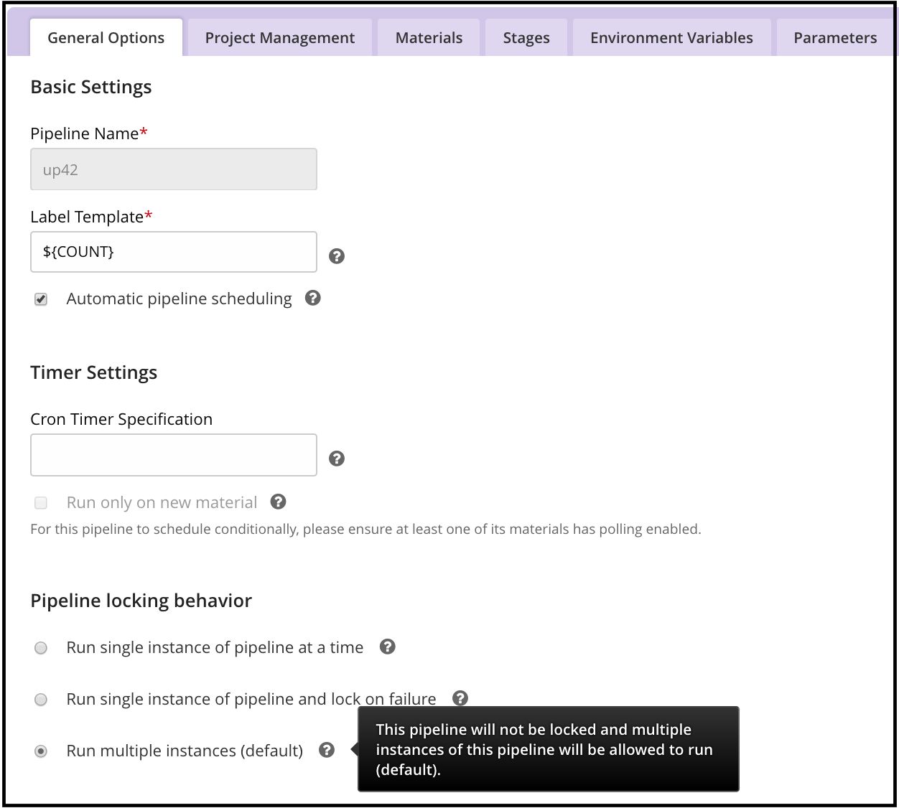

Pipeline locking: Ensure only one instance of a GoCD pipeline can run at the same time
Sometimes you want to ensure that only a single instance of a pipeline can run at a time. This is important if the stages of a pipeline are interrelated. For example the first stage may set up an environment that is used by the next stage in the pipeline.
If a pipeline is locked then GoCD will not allow any other instance of that pipeline to be scheduled until the currently running one has been completed.
To enable locking from the Config UI, navigate to the Pipeline Settings section of a pipeline. There are three options for locking:
Option 1: Run single instance of pipeline at a time (“Lock behavior: Unlock when finished”)
This option enables a single instance of the pipeline to run at a time by temporarily locking the pipeline and unlocking it when finished. When the pipeline finishes, either because of the failure of any stage or the success of the final stage, the pipeline is automatically unlocked. The pipeline is also unlocked if it reaches a manual stage.

Option 2: Run single instance of pipeline and lock on failure (“Lock behavior: Lock on failure”)
This option enables a single instance of the pipeline to run at a time. The pipeline is locked when it starts and it remains locked if it fails. The pipeline is unlocked if it reaches the last stage (even if it fails). The pipeline is not unlocked if it reaches a manual stage. If a pipeline is locked, it will not allow any new instances to run, unless it is unlocked, either manually or through the API.

Option 3: Run multiple instances (“Lock behavior: None”)
This is the default behavior. Multiple instances of a pipeline can run simultaneously.

Controlling locking behavior from the config XML
To enable locking from the Config XML set the lockBehavior attribute to one of unlockWhenFinished, lockOnFailure
or none, corresponding to the three options shown above:
<pipeline name="my-locked-pipeline" lockBehavior="lockOnFailure">
<materials>
...
</materials>
<stages>
...
</stages>
</pipeline>Also see the configuration reference.
 Edit this page
Edit this page